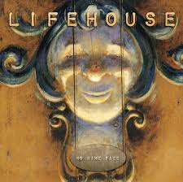

Playing Video Games

Ever since I was young, I've always enjoyed playing and seeing other people play Video Games in sites like Youtube.
For me though, it's not always just about enjoying by getting the highest scores, sometimes these games also holds stories that can change you.
| Sports

I still remember when I was young, I was so full of energy and curious about sports because my dad used to take me to the court when he plays basketball. Before the pandemic I'd say I was pretty fit and good at sports like basketball which is my favorite sport and badminton. Now though after the pandemic messed me up, I now tire easily and can't keep up so i normally play leisurely sports like pool nowadays.
|
Listening To Music

I never really appreciated music when I was young, that was
until the pandemic hit where I needed something to drown
out the deafening silence the province. Now I can't go a day
without listening to a song or singing myself.
| Watching Shows

Back then I was a big fan of cartoons and I still am now tbh, TAWOG is really good, I normally only watched cartoons and animes back then cause acting didn't seem to have the sparks and magic of animation. Now though, seeing the little details the actors have to do to fully sell their roles is really inspiring, especially if the story of the show is good like Breaking Bad or Better Call Saul which are my favorites.
|